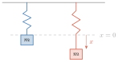
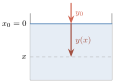
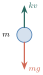

វត្ថុបំណង
- កំណត់សញ្ញាណសមីការឌីផេរ៉ង់ស្យែលលីនេអ៊ែរលំដាប់ទី 2
- កំណត់សមីការសម្គាល់នៃសមីការឌីផេរ៉ង់ស្យែលលីនេអ៊ែរលំដាប់ទី 2
- ដោះស្រាយសមីការឌីផេរ៉ង់ស្យែលលីនេអ៊ែរលំដាប់ទី 2 អូម៉ូសែន និងមានមេគុណថេរ
- ដោះស្រាយសមីការឌីផេរ៉ង់ស្យែលលីនេអ៊ែរលំដាប់ទី 2 មិនអូម៉ូសែន និងមានមេគុណថេរ
- បកស្រាយបាតុភូតធម្មជាតិ និងវិទ្យាសាស្ត្រខ្លះជាសមីការ រួចដោះស្រាយ ។
1. សមីការឌីផេរ៉ង់ស្យែលលីនេអ៊ែរលំដាប់ទី 2
ឧទាហរណ៍ : គេមានអនុគមន៍ \(\displaystyle f_{1}\) និង \(\displaystyle f_{2}\) ដែលកំណត់លើ \(\displaystyle \mathbb{R}\) ដោយ \(\displaystyle f_{1}(x)=e^{-x}\) និង \(\displaystyle f_{2}(x)=e^{3x}\) ។
- ក. គណនាដេរីវេទី 1 និងដេរីវេទី 2 នៃអនុគមន៍ \(\displaystyle f_{1}\) និង \(\displaystyle f_{2}\)
- ខ.
ផ្ទៀងផ្ទាត់ថាចំពោះគ្រប់ចំនួនពិត \(\displaystyle x\):
\[f''_{1}(x)-2f'_{1}(x)-3f_{1}(x)=0 \quad \text{និង} \quad f''_{2}(x)-2f'_{2}(x)-3f_{2}(x)=0 \text{ ។}\] - គ. បង្ហាញថាអនុគមន៍ \(\displaystyle y=c_{1}f_{1}(x)+c_{2}f_{2}(x)\) ផ្ទៀងផ្ទាត់សមីការ \(\displaystyle y''-2y'-3y=0\) ចំពោះគ្រប់ចំនួនថេរ \(\displaystyle c_{1}\) និង \(\displaystyle c_{2}\) ។
ដំណោះស្រាយ
- ក.
បើ \(\displaystyle f_{1}(x)=e^{-x}\) នោះដេរីវេទី 1 \(\displaystyle f'_{1}(x)=-e^{-x}\) និងដេរីវេទី 2 \(\displaystyle f''_{1}(x)=e^{-x}\)
បើ \(\displaystyle f_{2}(x)=e^{3x}\) នោះ \(\displaystyle f'_{2}(x)=3e^{3x}\) និង \(\displaystyle f''_{2}(x)=9e^{3x}\) ។
- ខ.
\(\displaystyle f''_{1}(x)-2f'_{1}(x)-3f_{1}(x)=e^{-x}+2e^{-x}-3e^{-x}=0\)
ដូច្នេះ \(\displaystyle f''_{1}(x)-2f'_{1}(x)-3f_{1}(x)=0\)
\(\displaystyle f''_{2}(x)-2f'_{2}(x)-3f_{2}(x)=9e^{3x}-6e^{3x}-3e^{3x}=0\)
ដូច្នេះ \(\displaystyle f''_{2}(x)-2f'_{2}(x)-3f_{2}(x)=0\) ។
- គ.
\(\displaystyle y=c_{1}f_{1}(x)+c_{2}f_{2}(x)\), \(\displaystyle y'=c_{1}f'_{1}(x)+c_{2}f'_{2}(x)\), \(\displaystyle y''=c_{1}f''_{1}(x)+c_{2}f''_{2}(x)\)
\[\begin{aligned} y''-2y'-3y &= c_{1}f''_{1}(x)+c_{2}f''_{2}(x)-2[c_{1}f'_{1}(x)+c_{2}f'_{2}(x)]-3[c_{1}f_{1}(x)+c_{2}f_{2}(x)] \\ &= c_{1}f''_{1}(x)-2c_{1}f'_{1}(x)-3c_{1}f_{1}(x)+c_{2}f''_{2}(x)-2c_{2}f'_{2}(x)-3c_{2}f_{2}(x) \\ &= c_{1}[f''_{1}(x)-2f'_{1}(x)-3f_{1}(x)]+c_{2}[f''_{2}(x)-2f'_{2}(x)-3f_{2}(x)] \\ &= c_{1}\times 0 + c_{2}\times 0 \\ y''-2y'-3y &= 0 \end{aligned}\]ដូច្នេះ អនុគមន៍ \(\displaystyle y=c_{1}f_{1}(x)+c_{2}f_{2}(x)\) ផ្ទៀងផ្ទាត់សមីការ \(\displaystyle y''-2y'-3y=0\) ។
- សមីការ \(\displaystyle f''_{1}(x)-2f'_{1}(x)-3f_{1}(x)=0\) និង \(\displaystyle f''_{2}(x)-2f'_{2}(x)-3f_{2}(x)=0\) អាចសរសេរជាសមីការ \(\displaystyle y''-2y'-3y=0\) ហៅថា សមីការឌីផេរ៉ង់ស្យែលលីនេអ៊ែរលំដាប់ទី 2 អូម៉ូសែន (អង្គទី 2 ស្មើ 0) និងមានមេគុណថេរ (\(\displaystyle 1\), \(\displaystyle -2\) និង \(\displaystyle -3\) ជាមេគុណរបស់សមីការ) ។
- ដោយអនុគមន៍ \(\displaystyle f_{1}\) និង \(\displaystyle f_{2}\) ដែលមានដេរីវេទី 1 \(\displaystyle f'_{1}, f'_{2}\) និងដេរីវេទី 2 \(\displaystyle f''_{1}, f''_{2}\) ផ្ទៀងផ្ទាត់សមីការ \(\displaystyle y''-2y'-3y=0\) នោះគេថាអនុគមន៍ \(\displaystyle f_{1}\) និង \(\displaystyle f_{2}\) ជាចម្លើយគោលនៃសមីការឌីផេរ៉ង់ស្យែលនេះ ។
- ដោយអនុគមន៍ \(\displaystyle y=c_{1}f_{1}(x)+c_{2}f_{2}(x)\) និងដេរីវេទី 1 ដេរីវេទី 2 នៃអនុគមន៍នេះផ្ទៀងផ្ទាត់សមីការ \(\displaystyle y''-2y'-3y=0\) ចំពោះគ្រប់ចំនួនថេរ \(\displaystyle c_{1}\) និង \(\displaystyle c_{2}\) នោះគេថាអនុគមន៍ \(\displaystyle y=c_{1}f_{1}+c_{2}f_{2}\) ជាចម្លើយទូទៅនៃសមីការឌីផេរ៉ង់ស្យែលនេះ ។
និយមន័យ សមីការឌីផេរ៉ង់ស្យែលលីនេអ៊ែរលំដាប់ទី 2 អូម៉ូសែន និងមានមេគុណថេរជាសមីការដែលអាចសរសេរជារាងទូទៅ \(\displaystyle ay''+by'+cy=0\) ដែល \(\displaystyle a, b, c\) ជាចំនួនពិត និង \(\displaystyle a \neq 0\) ។
ដោះស្រាយសមីការ \(\displaystyle ay''+by'+cy=0\) គឺរកគ្រប់អនុគមន៍ \(\displaystyle y\) ដែលផ្ទៀងផ្ទាត់សមីការនេះ ។ ដើម្បីងាយសិក្សា គេបំប្លែងសមីការ \(\displaystyle ay''+by'+cy=0\) ឱ្យទៅជារាង \(\displaystyle y''+by'+cy=0\) ដែលមេគុណនៃ \(\displaystyle y''\) ស្មើនឹង \(\displaystyle 1\) ។
2. ដំណោះស្រាយសមីការឌីផេរ៉ង់ស្យែលលីនេអ៊ែរលំដាប់ទី 2 អូម៉ូសែន និងមានមេគុណថេរ
2.1. ការបង្កើតសមីការសម្គាល់
គេយកវិធីដោះស្រាយសមីការឌីផេរ៉ង់ស្យែលលីនេអ៊ែរលំដាប់ទី 1 មកធ្វើជាលំនាំគំរូដើម្បីដោះស្រាយសមីការឌីផេរ៉ង់ស្យែលលីនេអ៊ែរលំដាប់ទី 2 ។
ឧទាហរណ៍ : គេមានសមីការឌីផេរ៉ង់ស្យែលលីនេអ៊ែរលំដាប់ទី 2 \(\displaystyle y''-5y'+6y=0\) និងសមីការឌីផេរ៉ង់ស្យែលលីនេអ៊ែរលំដាប់ទី 1 \(\displaystyle y'-\alpha y=0\) ។ កំណត់ចំនួនពិត \(\displaystyle \alpha\) និង \(\displaystyle \beta\) ដើម្បីឱ្យ \(\displaystyle (y'-\alpha y)'-\beta(y'-\alpha y)=y''-5y'+6y\) ។
ដំណោះស្រាយ : \(\displaystyle (y'-\alpha y)'-\beta(y'-\alpha y)=y''-\alpha y'-\beta y'+\alpha\beta y = y''-(\alpha+\beta)y'+\alpha\beta y\)
ដោយ \(\displaystyle (y'-\alpha y)'-\beta(y'-\alpha y)=y''-5y'+6y\) នោះគេទាញបាន \(\displaystyle \alpha+\beta=5\) និង \(\displaystyle \alpha\beta=6\)
ដោយស្គាល់ផលបូក និងផលគុណ នោះ \(\displaystyle \alpha\) និង \(\displaystyle \beta\) ជាឫសនៃសមីការ \(\displaystyle \lambda^{2}-5\lambda+6=0\)
សមីការ \(\displaystyle \lambda^{2}-5\lambda+6=0\) មានឫស 2 ផ្សេងគ្នា \(\displaystyle \lambda_{1}=2\) និង \(\displaystyle \lambda_{2}=3\)
ដូច្នេះ \(\displaystyle \alpha=2\) និង \(\displaystyle \beta=3\) ឬ \(\displaystyle \alpha=3\) និង \(\displaystyle \beta=2\)
គេបាន \(\displaystyle y''-5y'+6y=(y'-2y)'-3(y'-2y)\) ឬ \(\displaystyle y''-5y'+6y=(y'-3y)'-2(y'-3y)\)
បើគេតាង \(\displaystyle Z=y'-2y\) (ឬ \(\displaystyle Z=y'-3y\)) នោះសមីការ \(\displaystyle y''-5y'+6y=0\) អាចសរសេរជា \(\displaystyle Z'-3Z=0\) (ឬ \(\displaystyle Z'-2Z=0\)) ។
ធ្វើដូច្នេះ គឺគេបានបំប្លែងអង្គទី 1 នៃសមីការលំដាប់ទី 2 \(\displaystyle y''-5y'+6y=0\) ឱ្យទៅជាសមីការលំដាប់ទី 1 \(\displaystyle Z'-3Z=0\) (ឬ \(\displaystyle Z'-2Z=0\)) ។
- សមីការ \(\displaystyle \lambda^{2}-5\lambda+6=0\) ហៅថា សមីការសម្គាល់នៃសមីការឌីផេរ៉ង់ស្យែល \(\displaystyle y''-5y'+6y=0\)
- ដើម្បីដោះស្រាយសមីការ \(\displaystyle y''-5y'+6y=0\) ដំបូងគេដោះស្រាយសមីការ \(\displaystyle Z'-3Z=0\) (ឬ \(\displaystyle Z'-2Z=0\)) រួចបន្តទៅដោះស្រាយសមីការ \(\displaystyle y'-2y=Z\) (ឬ \(\displaystyle y'-3y=Z\)) ។
- សមីការឌីផេរ៉ង់ស្យែលលីនេអ៊ែរលំដាប់ទី 2 \(\displaystyle y''+by'+cy=0\) អាចសរសេរជាសមីការ \(\displaystyle (y'-\alpha y)'-\beta(y'-\alpha y)=0\) ដែល \(\displaystyle \alpha\) និង \(\displaystyle \beta\) ជាឫសនៃសមីការសម្គាល់ \(\displaystyle \lambda^{2}+b\lambda+c=0\) ដែល \(\displaystyle \lambda \in \mathbb{C}\) ។
- សមីការសម្គាល់ \(\displaystyle \lambda^{2}+b\lambda+c=0\) នៃសមីការឌីផេរ៉ង់ស្យែល \(\displaystyle y''+by'+cy=0\) អាចមានឫស 2 ជាចំនួនពិតផ្សេងគ្នា ឬមានឫសឌុបជាចំនួនពិត ឬមានឫស 2 ជាចំនួនកុំផ្លិច ។
2.2. វិធីដោះស្រាយសមីការឌីផេរ៉ង់ស្យែលលីនេអ៊ែរលំដាប់ទី 2 \(\displaystyle y''+by'+cy=0\)
2.2.1. ករណីដែលសមីការសម្គាល់មានឫសពីរជាចំនួនពិតផ្សេងគ្នា
ឧទាហរណ៍ : គេមានសមីការឌីផេរ៉ង់ស្យែល \(\displaystyle y''+2y'-8y=0 \quad (E)\)
ដោយ \(\displaystyle (E)\) មានសមីការសម្គាល់ \(\displaystyle \lambda^{2}+2\lambda-8=0\)
\(\displaystyle \Delta'=1-(-8)=9\) នោះសមីការសម្គាល់មានឫស 2 ជាចំនួនពិតផ្សេងគ្នាគឺ \(\displaystyle -4\) និង \(\displaystyle 2\) ។ សមីការ \(\displaystyle (E)\) អាចសរសេរជា \(\displaystyle (y'+4y)'-2(y'+4y)=0\)
តាង \(\displaystyle Z=y'+4y\) គេបាន \(\displaystyle Z'-2Z=0\)
\(\displaystyle Z'=2Z\) ឬ \(\displaystyle \frac{dZ}{dx}=2Z\)
តាមវិធីញែកអថេរ គេបាន \(\displaystyle \frac{dZ}{Z}=2dx\)
\(\displaystyle \ln|Z|=2x+c\), \(\displaystyle c\) ជាចំនួនថេរណាមួយក៏បាន
\(\displaystyle |Z|=e^{2x+c}\) នាំឱ្យ \(\displaystyle Z=c_{1}e^{2x}\) (ដែល \(\displaystyle c_{1}=\pm e^{c}\))
ដោយ \(\displaystyle Z=y'+4y\) នោះគេបាន \(\displaystyle y'+4y=c_{1}e^{2x}\)
ដោះស្រាយសមីការ \(\displaystyle y'+4y=c_{1}e^{2x}\)
គេដោះស្រាយសមីការ \(\displaystyle y'+4y=0\) រួចធ្វើបម្រែបម្រួលចំនួនថេរ
\(\displaystyle y'+4y=0\) គេបាន \(\displaystyle \frac{dy}{dx}=-4y\)
\(\displaystyle \frac{dy}{y}=-4dx\) នាំឱ្យ \(\displaystyle \ln|y|=-4x+c\)
\(\displaystyle y=c_{2}e^{-4x}\) (ដែល \(\displaystyle c_{2}=\pm e^{c}\))
ធ្វើបម្រែបម្រួលចំនួនថេរ \(\displaystyle c_{2}\) :
គេមាន \(\displaystyle y=c_{2}(x)e^{-4x}\) នាំឱ្យ \(\displaystyle y'=c'_{2}(x)e^{-4x}-4c_{2}(x)e^{-4x}\)
គេបានចម្លើយទូទៅនៃសមីការឌីផេរ៉ង់ស្យែល \(\displaystyle y''+2y'-8y=0\) គឺ \(\displaystyle y=Ae^{-4x}+Be^{2x}\) ដែល \(\displaystyle A\) និង \(\displaystyle B\) ជាចំនួនថេរណាមួយក៏បាន ។
- \(\displaystyle y=Ae^{-4x}+Be^{2x}\) ជាចម្លើយទូទៅនៃសមីការ \(\displaystyle y''+2y'-8y=0 \quad (E)\)
- \(\displaystyle y_{1}=e^{-4x}\) និង \(\displaystyle y_{2}=e^{2x}\) ហៅថាចម្លើយគោលនៃសមីការ \(\displaystyle y''+2y'-8y=0\) ព្រោះបើគេជំនួស \(\displaystyle y_{1}, y'_{1}\) និង \(\displaystyle y''_{1}\) នៅក្នុងសមីការ \(\displaystyle (E)\) គេនឹងបានសមភាពពិត ហើយបើគេជំនួស \(\displaystyle y_{2}, y'_{2}\) និង \(\displaystyle y''_{2}\) ក្នុងសមីការ \(\displaystyle (E)\) គេក៏បានសមភាពពិតដែរ ។
- រកសមីការសម្គាល់ \(\displaystyle \lambda^{2}+b\lambda+c=0\) នៃសមីការឌីផេរ៉ង់ស្យែល \(\displaystyle y''+by'+cy=0\)
- បើសមីការសម្គាល់មានឫស 2 ជាចំនួនពិតផ្សេងគ្នា \(\displaystyle \lambda_{1}=\alpha\) និង \(\displaystyle \lambda_{2}=\beta\) នោះសមីការ \(\displaystyle y''+by'+cy=0\) មានចម្លើយទូទៅ \(\displaystyle y=Ae^{\alpha x}+Be^{\beta x}\) ដែល \(\displaystyle A\) និង \(\displaystyle B\) ជាចំនួនថេរណាមួយក៏បាន
- \(\displaystyle y_{1}=e^{\alpha x}\), \(\displaystyle y_{2}=e^{\beta x}\) ជាចម្លើយគោល ។
- ក. ដោះស្រាយសមីការឌីផេរ៉ង់ស្យែល \(\displaystyle y''+y'-2y=0 \quad (E)\) ។
- ខ. រកចម្លើយពិសេសមួយនៃសមីការ \(\displaystyle (E)\) បើខ្សែកោងតាងអនុគមន៍ចម្លើយកាត់តាមចំណុច \(\displaystyle (x=0, y=1)\) ហើយបន្ទាត់ប៉ះនឹងខ្សែកោងត្រង់ចំណុចនោះមានមេគុណប្រាប់ទិសស្មើនឹង \(\displaystyle 4\) ។ សង់ខ្សែកោងនោះ ។
- ក.
សមីការ \(\displaystyle (E)\) មានសមីការសម្គាល់ \(\displaystyle \lambda^{2}+\lambda-2=0\)
គេបាន \(\displaystyle \lambda_{1}=-2\), \(\displaystyle \lambda_{2}=1\) ជាចំនួនពិត 2 ផ្សេងគ្នា
ដូច្នេះ ចម្លើយទូទៅនៃសមីការ \(\displaystyle (E)\) គឺ \(\displaystyle y=Ae^{-2x}+Be^{x}\) ដែល \(\displaystyle A\) និង \(\displaystyle B\) ជាចំនួនថេរណាមួយក៏បាន ។
- ខ.
រកចម្លើយពិសេស
បើ \(\displaystyle C\) ជាខ្សែកោងតាងអនុគមន៍ចម្លើយ \(\displaystyle y=Ae^{-2x}+Be^{x}\) កាត់តាមចំណុច \(\displaystyle (x=0, y=1)\) នោះគេបាន \(\displaystyle 1=A+B\)
មេគុណប្រាប់ទិសនៃបន្ទាត់ប៉ះនឹង \(\displaystyle C\) គឺ \(\displaystyle y'=-2Ae^{-2x}+Be^{x}\)
ដោយ \(\displaystyle x=0\), \(\displaystyle y'=4\) នោះ \(\displaystyle 4=-2A+B\)
\[\begin{cases} A+B=1 \\ -2A+B=4 \end{cases} \text{ នាំឱ្យ } A=-1, \quad B=2\]ដូច្នេះ \(\displaystyle y=-e^{-2x}+2e^{x}\) ជាចម្លើយពិសេសនៃសមីការ \(\displaystyle (E)\) តាមលក្ខខណ្ឌដើម \(\displaystyle y(0)=1\) និង \(\displaystyle y'(0)=4\) ។
- ក. ដោះស្រាយសមីការ \(\displaystyle 3y''-10y'+3y=0\) និង \(\displaystyle y''-2y'=0\) ។
- ខ. ដោះស្រាយសមីការតាមលក្ខខណ្ឌដើម \(\displaystyle y''-2y'-3y=0\), \(\displaystyle y(0)=-1\) និង \(\displaystyle y'(1)=\frac{1}{e}\) ។
មើលចម្លើយ
- ក. \(\displaystyle y=Ae^{\frac{1}{3}x}+Be^{3x}\) និង \(\displaystyle y=A+Be^{2x}\)
- ខ. \(\displaystyle y=Ae^{-x}+Be^{3x}\) និង \(\displaystyle y=-e^{-x}\) ។
2.2.2. ករណីសមីការសម្គាល់មានឫសឌុប
ឧទាហរណ៍ : ដោះស្រាយសមីការឌីផេរ៉ង់ស្យែល \(\displaystyle y''+4y'+4y=0 \quad (E)\)
ដំណោះស្រាយ : សមីការសម្គាល់នៃសមីការ \(\displaystyle (E)\) គឺ \(\displaystyle \lambda^{2}+4\lambda+4=0\)
សមីការសម្គាល់មានឫស \(\displaystyle \lambda_{1}=\lambda_{2}=-2\)
\(\displaystyle (E)\) អាចសរសេរជា \(\displaystyle (y'+2y)'+2(y'+2y)=0 \quad (i)\)
តាង \(\displaystyle Z=y'+2y \Rightarrow (i) : Z'+2Z=0\)
\(\displaystyle \frac{dZ}{dx}=-2Z\) នាំឱ្យ \(\displaystyle \frac{dZ}{Z}=-2dx\)
\(\displaystyle \ln|Z|=-2x+c\), \(\displaystyle c\) ជាចំនួនថេរណាមួយក៏បាន
\(\displaystyle Z=Ae^{-2x} \quad (A=\pm e^{c})\)
គេបាន \(\displaystyle y'+2y=Ae^{-2x} \quad (ii)\)
\(\displaystyle y'+2y=0\) មានចម្លើយ \(\displaystyle y=c_{1}e^{-2x}\)
ធ្វើបម្រែបម្រួលចំនួនថេរ \(\displaystyle c_{1}\)
\(\displaystyle y=c_{1}(x)e^{-2x} \Rightarrow y'=c'_{1}(x)e^{-2x}-2c_{1}(x)e^{-2x}\)
\(\displaystyle (ii) : c'_{1}(x)e^{-2x}-2c_{1}(x)e^{-2x}+2c_{1}(x)e^{-2x}=Ae^{-2x}\)
\(\displaystyle c'_{1}(x)e^{-2x}=Ae^{-2x}\)
\(\displaystyle c'_{1}(x)=A\) នាំឱ្យ \(\displaystyle c_{1}(x)=Ax+B\) (\(\displaystyle B\) ជាចំនួនថេរណាមួយក៏បាន)
គេបាន \(\displaystyle y=(Ax+B)e^{-2x}=Axe^{-2x}+Be^{-2x}\) ។ គេបានចម្លើយទូទៅនៃសមីការឌីផេរ៉ង់ស្យែល \(\displaystyle y''+4y'+4y=0\) គឺ \(\displaystyle y=Axe^{-2x}+Be^{-2x}\) ដែល \(\displaystyle A\) និង \(\displaystyle B\) ជាចំនួនថេរណាមួយក៏បាន ។
បើសមីការសម្គាល់ \(\displaystyle \lambda^{2}+b\lambda+c=0\) នៃសមីការឌីផេរ៉ង់ស្យែល \(\displaystyle y''+by'+cy=0\) មានឫសឌុបជាចំនួនពិត គឺ \(\displaystyle \lambda_{1}=\lambda_{2}=\alpha\) នោះគេបានចម្លើយទូទៅនៃសមីការឌីផេរ៉ង់ស្យែលនេះគឺ \(\displaystyle y=Axe^{\alpha x}+Be^{\alpha x}\) ដែល \(\displaystyle A\) និង \(\displaystyle B\) ជាចំនួនថេរណាមួយក៏បាន ។ \(\displaystyle y_{1}=xe^{\alpha x}\) និង \(\displaystyle y_{2}=e^{\alpha x}\) ជាចម្លើយគោល ។
ដោះស្រាយសមីការ \(\displaystyle (E) : y''+2y'+y=0\) តាមលក្ខខណ្ឌដើម \(\displaystyle y(\ln 2)=\frac{1}{2}\) និង \(\displaystyle y'(\ln 2)=-\frac{1}{2}\) ។
សមីការ \(\displaystyle y''+2y'+y=0\) មានសមីការសម្គាល់ \(\displaystyle \lambda^{2}+2\lambda+1=0\) មានឫសឌុបគឺ \(\displaystyle \lambda_{1}=\lambda_{2}=-1\)
ដូច្នេះ ចម្លើយទូទៅនៃសមីការ \(\displaystyle (E)\) គឺ \(\displaystyle y=Axe^{-x}+Be^{-x}\) ដែល \(\displaystyle A\) និង \(\displaystyle B\) ជាចំនួនថេរណាមួយក៏បាន ។
តាមលក្ខខណ្ឌដើម
\(\displaystyle y(\ln 2)=\frac{1}{2} : \frac{1}{2}=A\ln 2e^{-\ln 2}+Be^{-\ln 2}\)
\(\displaystyle \frac{1}{2}=\frac{1}{2}A\ln 2+\frac{1}{2}B\)
\(\displaystyle A\ln 2+B=1 \quad (i)\)
\(\displaystyle y=Axe^{-x}+Be^{-x}\) នាំឱ្យ \(\displaystyle y'=Ae^{-x}-Axe^{-x}-Be^{-x}\)
ដោយ \(\displaystyle y'(\ln 2)=-\frac{1}{2} : -\frac{1}{2}=Ae^{-\ln 2}-A\ln 2e^{-\ln 2}-Be^{-\ln 2}\)
\(\displaystyle -\frac{1}{2}=\frac{1}{2}A-\frac{1}{2}A\ln 2-\frac{1}{2}B\)
\(\displaystyle -1=A-A\ln 2-B \quad (ii)\)
តាម \(\displaystyle (i)\) និង \(\displaystyle (ii)\) : \(\displaystyle \begin{cases} A\ln 2+B=1 \\ A-A\ln 2-B=-1 \end{cases}\) នាំឱ្យ \(\displaystyle \begin{cases} A=0 \\ B=1 \end{cases}\)
ដូច្នេះ \(\displaystyle y=e^{-x}\) ជាចម្លើយពិសេសនៃសមីការ \(\displaystyle (E)\) តាមលក្ខខណ្ឌដើម \(\displaystyle y(\ln 2)=\frac{1}{2}\) និង \(\displaystyle y'(\ln 2)=-\frac{1}{2}\) ។
ដោះស្រាយសមីការឌីផេរ៉ង់ស្យែល \(\displaystyle 4y''-4y'+y=0\) តាមលក្ខខណ្ឌដើម \(\displaystyle y(0)=-3\) និង \(\displaystyle y'(0)=2\) ។
មើលចម្លើយ
ចម្លើយទូទៅ \(\displaystyle y=(Ax+B)e^{\frac{1}{2}x}\) ចម្លើយពិសេស \(\displaystyle y=\left(\frac{7}{2}x-3\right)e^{\frac{1}{2}x}\) ។
2.2.3. ករណីសមីការសម្គាល់មានឫសពីរជាចំនួនកុំផ្លិច
ឧទាហរណ៍ 1 : គេមានសមីការឌីផេរ៉ង់ស្យែល \(\displaystyle (E) : y''+by'+cy=0\) ។ បង្ហាញថាបើអនុគមន៍ \(\displaystyle y=y_{1}(x)+iy_{2}(x)\) ជាចម្លើយពិសេសនៃ \(\displaystyle (E)\) នោះ \(\displaystyle y_{1}(x)\) និង \(\displaystyle y_{2}(x)\) ជាចម្លើយគោលនៃ \(\displaystyle (E)\) រួចទាញរកចម្លើយទូទៅនៃ \(\displaystyle (E)\) ។
ដំណោះស្រាយ : \(\displaystyle y=y_{1}+iy_{2}\) នាំឱ្យ \(\displaystyle y'=y'_{1}+iy'_{2}\), \(\displaystyle y''=y''_{1}+iy''_{2}\)
ដោយ \(\displaystyle y\) ជាចម្លើយនៃ \(\displaystyle (E)\) នោះ \(\displaystyle (y''_{1}+iy''_{2})+b(y'_{1}+iy'_{2})+c(y_{1}+iy_{2})=0\)
\(\displaystyle (y''_{1}+by'_{1}+cy_{1})+i(y''_{2}+by'_{2}+cy_{2})=0\)
ចំនួនកុំផ្លិចមួយស្មើនឹងសូន្យ កាលណាផ្នែកពិតស្មើនឹងសូន្យ និងផ្នែកនិមិត្តស្មើនឹងសូន្យព្រមគ្នា
គេបាន \(\displaystyle y''_{1}+by'_{1}+cy_{1}=0\) និង \(\displaystyle y''_{2}+by'_{2}+cy_{2}=0\) នោះបញ្ជាក់ថាគេបាន \(\displaystyle y_{1}(x)\) និង \(\displaystyle y_{2}(x)\) ជាចម្លើយគោលនៃ \(\displaystyle (E)\) ។
ដូច្នេះ ចម្លើយទូទៅនៃ \(\displaystyle (E)\) គឺ \(\displaystyle y=k_{1}y_{1}(x)+k_{2}y_{2}(x)\) (\(\displaystyle k_{1}\) និង \(\displaystyle k_{2}\) ជាចំនួនថេរណាមួយក៏បាន) ។
ឧទាហរណ៍ 2 : គេមានសមីការ \(\displaystyle (E) : y''+by'+cy=0\) ដែលសមីការសម្គាល់ \(\displaystyle \lambda^{2}+b\lambda+c=0\) មានឫស 2 ជាចំនួនកុំផ្លិច \(\displaystyle \lambda_{1}=\alpha-i\beta\) និង \(\displaystyle \lambda_{2}=\alpha+i\beta\) ។ រកចម្លើយទូទៅនៃ \(\displaystyle (E)\) ។
ដំណោះស្រាយ : តាមវិធីដោះស្រាយសមីការឌីផេរ៉ង់ស្យែលលីនេអ៊ែរលំដាប់ទី 2 បើ \(\displaystyle \lambda_{1}\) និង \(\displaystyle \lambda_{2}\) ជាឫស 2 ផ្សេងគ្នានៃសមីការសម្គាល់នោះ គេបានចម្លើយទូទៅនៃ \(\displaystyle (E)\) គឺ \(\displaystyle y=Ae^{\lambda_{1}x}+Be^{\lambda_{2}x}\)
ដោយ \(\displaystyle \lambda_{1}=\alpha-i\beta\) និង \(\displaystyle \lambda_{2}=\alpha+i\beta\)
តាមរូបមន្ត Euler : \(\displaystyle e^{ix}=\cos x+i\sin x\) និង \(\displaystyle e^{-ix}=\cos x-i\sin x\)
គេបាន \(\displaystyle y=Ae^{\alpha x}(\cos\beta x-i\sin\beta x)+Be^{\alpha x}(\cos\beta x+i\sin\beta x)\)
\(\displaystyle y=(A+B)e^{\alpha x}\cos\beta x+i(B-A)e^{\alpha x}\sin\beta x\) ជាចម្លើយនៃ \(\displaystyle (E)\)
គេអាចបាន \(\displaystyle y_{1}=e^{\alpha x}\cos\beta x\) និង \(\displaystyle y_{2}=e^{\alpha x}\sin\beta x\) ជាចម្លើយគោលនៃ \(\displaystyle (E)\)
ដូច្នេះ ចម្លើយទូទៅនៃ \(\displaystyle (E)\) គឺ \(\displaystyle y=k_{1}(A+B)e^{\alpha x}\cos\beta x+k_{2}(B-A)e^{\alpha x}\sin\beta x\)
ឬ \(\displaystyle y=Ce^{\alpha x}\cos\beta x+De^{\alpha x}\sin\beta x\) ដែល \(\displaystyle C=k_{1}(A+B)\), \(\displaystyle D=k_{2}(B-A)\)
\(\displaystyle y=e^{\alpha x}(C\cos\beta x+D\sin\beta x)\) ដែល \(\displaystyle C\) និង \(\displaystyle D\) ជាចំនួនថេរណាមួយក៏បាន ។
បើសមីការសម្គាល់ \(\displaystyle \lambda^{2}+b\lambda+c=0\) នៃសមីការឌីផេរ៉ង់ស្យែល \(\displaystyle y''+by'+cy=0\) មានឫសជាចំនួនកុំផ្លិចពីរឆ្លាស់គ្នា \(\displaystyle \lambda_{1}=\alpha+i\beta\) និង \(\displaystyle \lambda_{2}=\alpha-i\beta\) នោះគេបានចម្លើយទូទៅនៃសមីការឌីផេរ៉ង់ស្យែលនេះគឺ \(\displaystyle y=e^{\alpha x}(C\cos\beta x+D\sin\beta x)\) ដែល \(\displaystyle C\) និង \(\displaystyle D\) ជាចំនួនថេរណាមួយក៏បាន ។
ដោះស្រាយសមីការ \(\displaystyle (E) : y''+2y'+2y=0\) ។
សមីការសម្គាល់នៃ \(\displaystyle (E)\) គឺ \(\displaystyle \lambda^{2}+2\lambda+2=0\)
\(\displaystyle \Delta'=1-2=-1=i^{2}\) នាំឱ្យ \(\displaystyle \lambda_{1}=-1-i\), \(\displaystyle \lambda_{2}=-1+i\)
ចម្លើយទូទៅនៃ \(\displaystyle (E)\) គឺ \(\displaystyle y=e^{-x}(C\cos x+D\sin x)\) ។
ដោះស្រាយសមីការតាមលក្ខខណ្ឌដើម \(\displaystyle y''+4y'+8y=0\) តាមលក្ខខណ្ឌដើម \(\displaystyle y(0)=1\) និង \(\displaystyle y'(0)=2\) ។
មើលចម្លើយ
ចម្លើយទូទៅ \(\displaystyle y=(A\cos 2x+B\sin 2x)e^{-2x}\) ចម្លើយពិសេស \(\displaystyle y=(\cos 2x+2\sin 2x)e^{-2x}\) ។
សង្ខេប សមីការឌីផេរ៉ង់ស្យែលលីនេអ៊ែរលំដាប់ទី 2 អូម៉ូសែន និងមានមេគុណថេរមានរាងទូទៅ \(\displaystyle y''+by'+cy=0 \quad (E)\) ដែល \(\displaystyle b\) និង \(\displaystyle c\) ជាចំនួនថេរ ។
សមីការ \(\displaystyle (E)\) មានសមីការសម្គាល់ \(\displaystyle \lambda^{2}+b\lambda+c=0\) ដែលមានឫស \(\displaystyle \lambda_{1}\) និង \(\displaystyle \lambda_{2}\) :
- ក. បើសមីការសម្គាល់មានឫសពីរ ជាចំនួនពិតផ្សេងគ្នាគឺ \(\displaystyle \lambda_{1}=\alpha\) និង \(\displaystyle \lambda_{2}=\beta\) នោះចម្លើយទូទៅនៃ \(\displaystyle (E)\) គឺ \(\displaystyle y=Ae^{\alpha x}+Be^{\beta x}\) ដែល \(\displaystyle A\) និង \(\displaystyle B\) ជាចំនួនថេរណាមួយក៏បាន
- ខ. បើសមីការសម្គាល់មានឫសឌុបគឺ \(\displaystyle \lambda_{1}=\lambda_{2}=\alpha\) នោះចម្លើយទូទៅនៃ \(\displaystyle (E)\) គឺ \(\displaystyle y=Axe^{\alpha x}+Be^{\alpha x}\) ដែល \(\displaystyle A\) និង \(\displaystyle B\) ជាចំនួនថេរណាមួយក៏បាន
- គ. បើសមីការសម្គាល់មានឫសពីរ ជាចំនួនកុំផ្លិចឆ្លាស់គ្នាគឺ \(\displaystyle \lambda_{1}=\alpha+i\beta\) និង \(\displaystyle \lambda_{2}=\alpha-i\beta\) នោះចម្លើយទូទៅនៃ \(\displaystyle (E)\) គឺ \(\displaystyle y=e^{\alpha x}(C\cos\beta x+D\sin\beta x)\) ដែល \(\displaystyle C\) និង \(\displaystyle D\) ជាចំនួនថេរណាមួយក៏បាន ។
3. ដំណោះស្រាយសមីការឌីផេរ៉ង់ស្យែលលីនេអ៊ែរលំដាប់ទី 2 មិនអូម៉ូសែន និងមានមេគុណថេរ
សមីការឌីផេរ៉ង់ស្យែលលីនេអ៊ែរលំដាប់ទី 2 មិនអូម៉ូសែន និងមានមេគុណថេរ មានរាងទូទៅ \(\displaystyle y''+by'+cy=p(x)\) ដែល \(\displaystyle p(x)\) ជាអនុគមន៍មួយខុសពីសូន្យ ហើយ \(\displaystyle b\) និង \(\displaystyle c\) ជាចំនួនពិតថេរ ។
3.1. វិធីដោះស្រាយសមីការឌីផេរ៉ង់ស្យែលលីនេអ៊ែរលំដាប់ទី 2 មិនអូម៉ូសែន \(\displaystyle y''+by'+cy=p(x)\)
ឧទាហរណ៍ : ដោះស្រាយសមីការ \(\displaystyle y''-y=2x \quad (E)\) ។
ដំណោះស្រាយ : សមីការ \(\displaystyle y''-y=0\) មានសមីការសម្គាល់ \(\displaystyle \lambda^{2}-1=0\) ដែលមានឫស \(\displaystyle \lambda_{1}=1\), \(\displaystyle \lambda_{2}=-1\)
សមីការ \(\displaystyle (E)\) អាចសរសេរជា \(\displaystyle (y'-y)'+(y'-y)=2x\)
តាង \(\displaystyle Z=(y'-y) : Z'+Z=2x \quad (1)\)
សមីការ \(\displaystyle Z'+Z=0\) មានចម្លើយ \(\displaystyle Z=Ae^{-x}\), \(\displaystyle A\) ជាចំនួនថេរណាមួយក៏បាន
ធ្វើបម្រែបម្រួលចំនួនថេរ \(\displaystyle A : Z=A(x)e^{-x} \Rightarrow Z'=A'(x)e^{-x}-A(x)e^{-x}\)
\(\displaystyle (1) : A'(x)e^{-x}-A(x)e^{-x}+A(x)e^{-x}=2x\)
\(\displaystyle A'(x)e^{-x}=2x\) នាំឱ្យ \(\displaystyle A'(x)=2xe^{x}\)
\(\displaystyle A(x)=\int 2xe^{x}dx = 2(x-1)e^{x}+B\)
ដូច្នេះ \(\displaystyle Z=[2(x-1)e^{x}+B]e^{-x} = 2(x-1)+Be^{-x}\)
ដោយ \(\displaystyle Z=(y'-y) : y'-y=2(x-1)+Be^{-x} \quad (2)\)
សមីការ \(\displaystyle y'-y=0\) មានចម្លើយ \(\displaystyle y=Ce^{x}\)
ធ្វើបម្រែបម្រួលចំនួនថេរ \(\displaystyle C : y=C(x)e^{x}\), \(\displaystyle y'=C'(x)e^{x}+C(x)e^{x}\)
\(\displaystyle (2) : C'(x)e^{x}+C(x)e^{x}-C(x)e^{x}=2(x-1)+Be^{-x}\)
\(\displaystyle C'(x)e^{x}=2(x-1)+Be^{-x}\)
\(\displaystyle C'(x)=2(x-1)e^{-x}+Be^{-2x}\)
ដូច្នេះ \(\displaystyle y=(-2xe^{-x}+C_{2}e^{-2x}+C_{1})e^{x}\)
\(\displaystyle y=C_{1}e^{x}+C_{2}e^{-x}-2x\) ជាចម្លើយទូទៅនៃសមីការ \(\displaystyle (E)\) ។
3.2. វិធីដោះស្រាយតាមការស្វែងរកចម្លើយពិសេសមិនអូម៉ូសែន
ឧទាហរណ៍ : គេមានសមីការឌីផេរ៉ង់ស្យែល \(\displaystyle y''-y=2x \quad (E)\) ។
- ក. តាងអនុគមន៍ \(\displaystyle \varphi\) កំណត់ដោយ \(\displaystyle \varphi(x)=-2x\) ។ បង្ហាញថាអនុគមន៍ \(\displaystyle \varphi\) ជាចម្លើយនៃ \(\displaystyle (E)\)
- ខ. រកអនុគមន៍ \(\displaystyle g\) ដែលជាចម្លើយទូទៅនៃសមីការ \(\displaystyle y''-y=0\)
- គ. ផ្ទៀងផ្ទាត់ថាអនុគមន៍ \(\displaystyle f=g+\varphi\) ជាចម្លើយនៃ \(\displaystyle (E)\) ។ ទាញរកអនុគមន៍ \(\displaystyle f\) ។
ដំណោះស្រាយ :
- ក.
បើ \(\displaystyle \varphi(x)\) ជាចម្លើយនៃ \(\displaystyle (E)\) នោះគេបាន \(\displaystyle \varphi''(x)-\varphi(x)=2x\) ត្រូវផ្ទៀងផ្ទាត់សមីការ \(\displaystyle (E)\)
ដោយ \(\displaystyle \varphi(x)=-2x\) នោះ \(\displaystyle \varphi'(x)=-2\), \(\displaystyle \varphi''(x)=0\)
\(\displaystyle \varphi''(x)-\varphi(x)=0-(-2x)=2x\) នោះ \(\displaystyle \varphi(x)\) ផ្ទៀងផ្ទាត់សមីការ \(\displaystyle (E)\)
ដូច្នេះ \(\displaystyle \varphi(x)=-2x\) ជាចម្លើយនៃ \(\displaystyle (E)\) ។
- ខ.
សមីការ \(\displaystyle y''-y=0\) មានសមីការសម្គាល់ \(\displaystyle \lambda^{2}-1=0 \Rightarrow \lambda_{1}=-1, \lambda_{2}=1\)
ចម្លើយទូទៅនៃសមីការ \(\displaystyle y''-y=0\) គឺ \(\displaystyle g(x)=Ae^{-x}+Be^{x}\) ។
- គ.
\(\displaystyle f=g+\varphi\) នាំឱ្យ \(\displaystyle f'=g'+\varphi'\), \(\displaystyle f''=g''+\varphi''\)
\(\displaystyle f''(x)-f(x)=(g''+\varphi'')(x)-(g+\varphi)(x)=g''(x)-g(x)+\varphi''(x)-\varphi(x)\)
ដោយ \(\displaystyle g(x)\) ជាចម្លើយនៃ \(\displaystyle y''-y=0\) នោះ \(\displaystyle g''(x)-g(x)=0\)
\(\displaystyle \varphi(x)\) ជាចម្លើយនៃ \(\displaystyle (E)\) នោះ \(\displaystyle \varphi''(x)-\varphi(x)=2x\)
ដូច្នេះ \(\displaystyle f''(x)-f(x)=2x\) បញ្ជាក់ថា \(\displaystyle f(x)\) ជាចម្លើយនៃ \(\displaystyle (E)\)
ដូច្នេះ \(\displaystyle f(x)=g(x)+\varphi(x)=Ae^{-x}+Be^{x}-2x\)
\(\displaystyle f(x)=Ae^{-x}+Be^{x}-2x\) ជាចម្លើយទូទៅនៃ \(\displaystyle (E)\) ។
- \(\displaystyle \varphi(x)=-2x\) ជាពហុធាដឺក្រេទី 1 មានទម្រង់ដូចអង្គទី 2 នៃសមីការ \(\displaystyle (E)\) ។ \(\displaystyle \varphi(x)\) ហៅថាចម្លើយពិសេសមិនអូម៉ូសែននៃសមីការ \(\displaystyle (E)\)
- \(\displaystyle g(x)\) ជាចម្លើយទូទៅនៃសមីការ \(\displaystyle y''-y=0\)
- ចម្លើយទូទៅនៃសមីការ \(\displaystyle (E)\) គឺ \(\displaystyle f(x)=g(x)+\varphi(x)\) ។
របៀបដោះស្រាយសមីការឌីផេរ៉ង់ស្យែលលីនេអ៊ែរលំដាប់ទី 2 មិនអូម៉ូសែន \(\displaystyle y''+by'+cy=p(x)\), \(\displaystyle p(x)\neq 0\)
- ស្វែងរកចម្លើយពិសេសមិនអូម៉ូសែន តាងដោយ \(\displaystyle y_{p}\) នៃសមីការ \(\displaystyle y''+by'+cy=p(x)\) ដែល \(\displaystyle y_{p}\) មានទម្រង់ដូចអង្គទី 2 \(\displaystyle p(x)\)
- រកចម្លើយទូទៅតាងដោយ \(\displaystyle y_{c}\) នៃសមីការលីនេអ៊ែរលំដាប់ទី 2 អូម៉ូសែន \(\displaystyle y''+by'+cy=0\)
- គេបានចម្លើយទូទៅនៃសមីការលីនេអ៊ែរលំដាប់ទី 2 មិនអូម៉ូសែនជាផលបូកនៃ \(\displaystyle y_{c}\) និង \(\displaystyle y_{p}\) គឺ \(\displaystyle y=y_{c}+y_{p}\) ។
គេមានសមីការឌីផេរ៉ង់ស្យែល \(\displaystyle y''-2y'-3y=6x^{2}-x \quad (E)\) ។
- ក. រកចំនួនពិត \(\displaystyle a, b\) និង \(\displaystyle c\) ដើម្បីឱ្យអនុគមន៍ \(\displaystyle y_{p}=ax^{2}+bx+c\) ជាចម្លើយពិសេសនៃសមីការ \(\displaystyle (E)\) ។
- ខ. រកចម្លើយទូទៅ \(\displaystyle y_{c}\) នៃសមីការ \(\displaystyle y''-2y'-3y=0\) ។
- គ. ផ្ទៀងផ្ទាត់ថា \(\displaystyle y=y_{c}+y_{p}\) ជាចម្លើយទូទៅនៃ \(\displaystyle (E)\) រួចទាញរកចម្លើយទូទៅនៃ \(\displaystyle (E)\) ។
- ក.
រកចំនួនពិត \(\displaystyle a, b\) និង \(\displaystyle c\)
ដោយ \(\displaystyle y_{p}=ax^{2}+bx+c\) គេបាន \(\displaystyle y'_{p}=2ax+b\), \(\displaystyle y''_{p}=2a\)
\(\displaystyle y''_{p}-2y'_{p}-3y_{p} = 2a-2(2ax+b)-3(ax^{2}+bx+c)\)
គេបាន \(\displaystyle 2a-4ax-2b-3ax^{2}-3bx-3c = 6x^{2}-x\)
\(\displaystyle -3ax^{2}-(4a+3b)x+2a-2b-3c = 6x^{2}-x\)
\[\begin{cases} -3a=6 \\ -(4a+3b)=-1 \\ 2a-2b-3c=0 \end{cases} \Rightarrow \begin{cases} a=-2 \\ b=3 \\ c=-\frac{10}{3} \end{cases}\]ដូច្នេះ \(\displaystyle y_{p}=-2x^{2}+3x-\frac{10}{3}\) ជាចម្លើយពិសេសនៃ \(\displaystyle (E)\) ។
- ខ.
រកចម្លើយទូទៅនៃសមីការ \(\displaystyle y''-2y'-3y=0\)
សមីការ \(\displaystyle y''-2y'-3y=0\) មានសមីការសម្គាល់ \(\displaystyle \lambda^{2}-2\lambda-3=0\) ដែលមានឫស 2 ផ្សេងគ្នាគឺ \(\displaystyle \lambda_{1}=-1\), \(\displaystyle \lambda_{2}=3\)
ដូច្នេះ ចម្លើយទូទៅនៃសមីការ \(\displaystyle (E)\) គឺ \(\displaystyle y_{c}=Ae^{-x}+Be^{3x}\) ។
- គ.
ផ្ទៀងផ្ទាត់ថា \(\displaystyle y=y_{c}+y_{p}\) ជាចម្លើយនៃ \(\displaystyle (E)\)
ដោយ \(\displaystyle y=Ae^{-x}+Be^{3x}-2x^{2}+3x-\frac{10}{3}\) នោះគេបាន
\(\displaystyle y'=-Ae^{-x}+3Be^{3x}-4x+3\), \(\displaystyle y''=Ae^{-x}+9Be^{3x}-4\)
\[\begin{aligned} y''-2y'-3y &= Ae^{-x}+9Be^{3x}-4+2Ae^{-x}-6Be^{3x}+8x-6 \\ &\quad -3Ae^{-x}-3Be^{3x}+6x^{2}-9x+10 \\ y''-2y'-3y &= 6x^{2}-x \quad \text{ផ្ទៀងផ្ទាត់} \end{aligned}\]ដូច្នេះ ចម្លើយទូទៅនៃ \(\displaystyle (E)\) គឺ \(\displaystyle y=Ae^{-x}+Be^{3x}-2x^{2}+3x-\frac{10}{3}\) ។
គេមានសមីការឌីផេរ៉ង់ស្យែល \(\displaystyle y''+4y'+4y=-4x \quad (E)\) ។
- ក. រកចម្លើយពិសេសនៃ \(\displaystyle (E)\) ។
- ខ. ដោះស្រាយសមីការ \(\displaystyle (E)\) តាមលក្ខខណ្ឌដើម \(\displaystyle y(0)=2\), \(\displaystyle y'(0)=-2\) ។
មើលចម្លើយ
- ក. \(\displaystyle y_{p}=-x+1\)
- ខ. \(\displaystyle y=e^{-2x}(x+1)-x+1\) ។
4. អនុវត្តន៍សមីការឌីផេរ៉ង់ស្យែលក្នុងវិទ្យាសាស្ត្រ
លំយោលអាម៉ូនិក : បើគេថ្ពក់វត្ថុមួយដែលមានម៉ាស \(\displaystyle m\) នៅខាងចុងនៃរ៉ឺស័រដែលគេចងភ្ជាប់នឹងរបាមួយ នោះគេឃើញរ៉ឺស័រយឺតបានប្រវែង \(\displaystyle S\) ។
តាមលក្ខខណ្ឌលំនឹងគេបាន \(\displaystyle mg=kS\) ដែល \(\displaystyle g\) ជាសំទុះទំនាញផែនដី និង \(\displaystyle k\) ជាមេគុណថេរកម្រាញនៃរ៉ឺស័រ ។
បើគេប្រើកម្លាំង \(\displaystyle F\) ធ្វើឱ្យវត្ថុមានចលនាតាមទិសឈរ នោះតាមច្បាប់ទី 2 ញូតុន គេបាន \(\displaystyle F=ma\) ដែល \(\displaystyle a\) ជាសំទុះនៃចលនារបស់វត្ថុនៅពេលវាផ្លាស់ទី ។ (រូបខាងក្រោម)

បើ \(\displaystyle x\) ជាបម្លាស់ទីនៃវត្ថុធៀបនឹងទីតាំងលំនឹង នោះតាមច្បាប់ហ៊ុក បង្ហាញថាកម្លាំងនៃភាពយឺតរបស់រ៉ឺស័រសមាមាត្រនឹងប្រវែងសាច់លូតរបស់រ៉ឺស័រគឺ \(\displaystyle k(S+x)\) ដែល \(\displaystyle k\) ជាមេគុណថេរកម្រាញនៃរ៉ឺស័រ \(\displaystyle k>0\) ។
4.1. ចលនាគ្មានកម្លាំងកកិត
តាមច្បាប់ទី 2 ញូតុន និងច្បាប់ហ៊ុក គេបានទំនាក់ទំនង :
ដោយ \(\displaystyle a\) ជាសំទុះនៅពេលដែលវត្ថុផ្លាស់ទី និង \(\displaystyle x\) ជាបម្លាស់ទី នោះគេបាន \(\displaystyle a=\frac{d^{2}x}{dt^{2}}\)
\(\displaystyle (1) : m\frac{d^{2}x}{dt^{2}}=-kS-kx+mg\)
ដោយ \(\displaystyle mg=kS\) នោះ \(\displaystyle m\frac{d^{2}x}{dt^{2}}=-kx\) នោះគេបាន \(\displaystyle \frac{d^{2}x}{dt^{2}}+\frac{k}{m}x=0\)
បើគេតាង \(\displaystyle \frac{k}{m}=c^{2}\) នោះ \(\displaystyle \frac{d^{2}x}{dt^{2}}+c^{2}x=0\) ជាសមីការឌីផេរ៉ង់ស្យែលលីនេអ៊ែរលំដាប់ទី 2 អូម៉ូសែន និងមានមេគុណថេរ ។
បើគេព្យួរវត្ថុមានម៉ាស \(\displaystyle m=1\text{ kg}\) នៅចុងនៃរ៉ឺស័រនោះ រ៉ឺស័រលូតបានប្រវែង \(\displaystyle 0.20\text{ m}\) ។ ក្នុងខណៈ \(\displaystyle t=0\) គេឱ្យវត្ថុស្ថិតនៅខាងក្រោមទីតាំងលំនឹងចម្ងាយ \(\displaystyle 0.40\text{ m}\) ។ បន្ទាប់មកគេលែងវត្ថុឱ្យរត់ឡើងលើដោយល្បឿន \(\displaystyle 0.70\text{ m/s}\) ។ រកសមីការនៃចលនាសេរីនេះ ។
ដោយម៉ាស \(\displaystyle 1\text{ kg}\) ធ្វើឱ្យរ៉ឺស័រយឺតបាន \(\displaystyle 0.20\text{ m}\) នោះតាមច្បាប់ហ៊ុក គេបាន \(\displaystyle mg=kS\) នាំឱ្យ \(\displaystyle k=\frac{mg}{S}=\frac{1\times 9.8}{0.20}=49\text{ N/m}\)
ដោយចលនានេះគ្មានកម្លាំងកកិត នោះគេបានសមីការ
គេដឹងថាក្នុងខណៈពេល \(\displaystyle t=0\), \(\displaystyle x=0.40\text{ m}\) នោះគេបាន \(\displaystyle x(0)=0.4\) ហើយល្បឿននៅខណៈពេល \(\displaystyle t=0\) គឺ \(\displaystyle 0.70\text{ m/s}\) នោះគេបាន \(\displaystyle x'(0)=-0.70\)
ដោះស្រាយសមីការ \(\displaystyle x''+49x=0\) តាមលក្ខខណ្ឌដើម \(\displaystyle x(0)=0.4\) និង \(\displaystyle x'(0)=-0.70\)
សមីការសម្គាល់នៃសមីការឌីផេរ៉ង់ស្យែល \(\displaystyle x''+49x=0\) គឺ \(\displaystyle \lambda^{2}+49=0\) គេបាន \(\displaystyle \lambda=\pm 7i\)
ចម្លើយទូទៅនៃសមីការ \(\displaystyle x''+49x=0\) គឺ \(\displaystyle x(t)=A\cos 7t+B\sin 7t\)
ដោយ \(\displaystyle x(0)=0.4\) នោះ \(\displaystyle 0.4=A\) ឬ \(\displaystyle A=\frac{2}{5}\)
\(\displaystyle x'(t)=-7A\sin 7t+7B\cos 7t\)
ដោយ \(\displaystyle x'(0)=-0.70\) នោះ \(\displaystyle -0.70=7B\) ឬ \(\displaystyle B=-0.10=-\frac{1}{10}\) ។
ដូច្នេះ សមីការនៃចលនាសេរីនេះ តាមលក្ខខណ្ឌដើមដែលគេឱ្យគឺ
វត្ថុមួយមានម៉ាស \(\displaystyle m=0.75\text{ kg}\) ត្រូវព្យួរនៅចុងរ៉ឺស័រក្នុងមជ្ឈដ្ឋានមួយដែលមានសំទុះទំនាញផែនដី \(\displaystyle g=9.6\text{ m/s}^{2}\) ពេលនោះរ៉ឺស័រលូតបានប្រវែង \(\displaystyle 0.1\text{ m}\) ។ រកសមីការនៃចលនារបស់វត្ថុ បើវត្ថុនោះត្រូវគេលែងចេញពីទីតាំងមួយនៅខាងលើទីតាំងលំនឹងចម្ងាយ \(\displaystyle 0.25\text{ m}\) ។
មើលចម្លើយ
\(\displaystyle x(t)=-\frac{1}{4}\cos 4\sqrt{6}t\)
4.2. ចលនាមានកម្លាំងកកិត
បើប្រព័ន្ធចលនានៃវត្ថុស្ថិតក្នុងមជ្ឈដ្ឋានដែលមានកម្លាំងកកិត នោះគេដឹងថាកម្លាំងកកិតសមាមាត្រនឹងល្បឿននៃចលនា ។
កម្លាំងកកិតគឺ \(\displaystyle \mu v\) ដែល \(\displaystyle \mu\) ជាមេគុណសមាមាត្រ និង \(\displaystyle v\) ជាល្បឿន \(\displaystyle v=\frac{dx}{dt}\) តាមច្បាប់ទី 2 ញូតុន និងច្បាប់ហ៊ុក គេបាន \(\displaystyle m\frac{d^{2}x}{dt^{2}}=-kx-\mu v\)
តាង \(\displaystyle \frac{\mu}{m}=2\lambda : \frac{d^{2}x}{dt^{2}}+2\lambda\frac{dx}{dt}+c^{2}x=0\)
បើគេព្យួរម៉ាស \(\displaystyle 0.25\text{ kg}\) នៅចុងនៃរ៉ឺស័រ គេឃើញរ៉ឺស័រលូតបានប្រវែង \(\displaystyle 61\text{ cm}\) ។ ក្នុងទីតាំងលំនឹង គេប្រើកម្លាំងឱ្យម៉ាសរត់ទៅលើដោយល្បឿនដើម \(\displaystyle 0.9\text{ m/s}\) ។ គេសន្មតថាក្នុងប្រព័ន្ធចលនានេះមានកម្លាំងកកិត 2 ដងនៃល្បឿនដែលកំពុងមានក្នុងចលនា និង \(\displaystyle g=9.76\text{ m/s}^{2}\) ។ រកសមីការនៃបម្លាស់ទី \(\displaystyle x(t)\)
តាមច្បាប់ហ៊ុក \(\displaystyle mg=kS\)
សមីការឌីផេរ៉ង់ស្យែលនៃចលនានេះគឺ
គេបានសមីការសម្គាល់នៃសមីការ \(\displaystyle x''+8x'+16x=0\) គឺ \(\displaystyle \lambda^{2}+8\lambda+16=0\) ឬ \(\displaystyle (\lambda+4)^{2}=0\) នាំឱ្យ \(\displaystyle \lambda_{1}=\lambda_{2}=-4\)
ចម្លើយទូទៅនៃសមីការឌីផេរ៉ង់ស្យែលគឺ \(\displaystyle x(t)=Ae^{-4t}+Bte^{-4t}\)
\(\displaystyle x(0)=0 : A=0\)
\(\displaystyle x'(t)=-4Ae^{-4t}+Be^{-4t}-4Bte^{-4t}\) និង \(\displaystyle x'(0)=-0.9\)
\(\displaystyle -0.9=-4A+B\) នាំឱ្យ \(\displaystyle B=-0.9\)
ដូច្នេះ \(\displaystyle x(t)=-0.9te^{-4t}\) ឬ \(\displaystyle x(t)=-\frac{9}{10}te^{-4t}\) ។
គេព្យួរម៉ាស \(\displaystyle m=0.5\text{ kg}\) នៅចុងរ៉ឺស័រមួយដែលមានប្រវែង \(\displaystyle 0.5\text{ m}\) ។ ក្នុងទីតាំងលំនឹងរ៉ឺស័រមានប្រវែង \(\displaystyle 0.32\text{ m}\) ។ គេរុញម៉ាសទៅលើឃ្លាតពីទីតាំងលំនឹង \(\displaystyle 0.2\text{ m}\) រួចគេលែងឱ្យម៉ាសមានចលនា ។ ប្រព័ន្ធចលនានេះស្ថិតក្នុងមជ្ឈដ្ឋានមានកម្លាំងកកិតស្មើនឹងល្បឿនដែលកំពុងមានចលនា (ក្នុងទឹក) ។ រកសមីការបម្លាស់ទី \(\displaystyle x(t)\) ។
មើលចម្លើយ
\(\displaystyle x(t)=-e^{-\frac{1}{2}t}\left(\frac{1}{5}\cos\frac{\sqrt{119}}{2}t+\frac{\sqrt{119}}{595}\sin\frac{\sqrt{119}}{2}t\right)\)
លំហាត់
ផ្ទៀងផ្ទាត់ថាអនុគមន៍ \(\displaystyle f\) ជាចម្លើយនៃសមីការឌីផេរ៉ង់ស្យែលដែលគេឱ្យនៅខាងស្តាំ :
- ក. \(\displaystyle f(x)=(2x+1)e^{-x}\), \(\displaystyle y''+2y'+y=0\)
- ខ. \(\displaystyle f(x)=e^{-x}\sin x\), \(\displaystyle y''+2y'+2y=0\)
- គ. \(\displaystyle f(x)=Ae^{x}+Bxe^{x}\), \(\displaystyle y''-2y'+y=0\) ដែល \(\displaystyle A\) និង \(\displaystyle B\) ជាចំនួនថេរណាមួយក៏បាន ។
ដោះស្រាយសមីការ
- ក. \(\displaystyle 2y''-3y'+y=0\)
- ខ. \(\displaystyle -4y''+7y'+2y=0\)
- គ. \(\displaystyle y''-2y'=0\)
- ឃ. \(\displaystyle y''-3y'+3y=0\)
- ង. \(\displaystyle 2y''+3y'-2y=0\)
- ច. \(\displaystyle y''-3y'+y=0\) ។
ក្នុងករណីនីមួយៗខាងក្រោម គេឱ្យ \(\displaystyle f\) ជាអនុគមន៍កំណត់លើ \(\displaystyle \mathbb{R}\) ។ រកសមីការឌីផេរ៉ង់ស្យែលលីនេអ៊ែរលំដាប់ទី 2 អូម៉ូសែន ដែលមានអនុគមន៍ \(\displaystyle f\) ជាចម្លើយ
- ក. \(\displaystyle f(x)=(x+1)e^{-2x}\)
- ខ. \(\displaystyle f(x)=2e^{-x}+3e^{3x}\)
- គ. \(\displaystyle f(x)=(2\cos 3x-3\sin 3x)e^{x}\) ។
ដោះស្រាយសមីការឌីផេរ៉ង់ស្យែលមានលក្ខខណ្ឌដើម
- ក. \(\displaystyle y''-y=0\), \(\displaystyle y(0)=1\), \(\displaystyle y'(0)=-2\)
- ខ. \(\displaystyle y''-2y'+3y=0\), \(\displaystyle y(0)=2\), \(\displaystyle y'(0)=1\)
- គ. \(\displaystyle y''+y=0\), \(\displaystyle y\left(\frac{\pi}{2}\right)=3\), \(\displaystyle y'\left(\frac{\pi}{2}\right)=2\)
- ឃ. \(\displaystyle y''-3y'+2y=0\), \(\displaystyle y(1)=1\), \(\displaystyle y'(1)=3\) ។
គេមានសមីការឌីផេរ៉ង់ស្យែល \(\displaystyle y''-4y'+2y=4 \quad (E)\) ។
- ក. រកអនុគមន៍ថេរ \(\displaystyle k\) ដែលជាចម្លើយពិសេសនៃ \(\displaystyle (E)\)
- ខ. ដោះស្រាយសមីការ \(\displaystyle y''-4y'+2y=4\)
- គ. រកចម្លើយពិសេសនៃ \(\displaystyle (E)\) ដែលផ្ទៀងផ្ទាត់លក្ខខណ្ឌដើម \(\displaystyle y(0)=2\sqrt{2}\), \(\displaystyle y'(0)=0\) ។
គេមានសមីការឌីផេរ៉ង់ស្យែល \(\displaystyle y''+3y'=5 \quad (E)\) ។
- ក. រកឫសនៃសមីការសម្គាល់នៃសមីការ \(\displaystyle (E)\)
- ខ. រកអនុគមន៍ \(\displaystyle g\) ដែល \(\displaystyle g(x)=Ax\) ជាចម្លើយពិសេសនៃសមីការ \(\displaystyle (E)\)
- គ. ដោះស្រាយសមីការ \(\displaystyle y''+3y'=5\)
- ឃ. រកចម្លើយពិសេសនៃសមីការ កាលណា \(\displaystyle y(0)=e^{3}\), \(\displaystyle y'(1)=\frac{2}{3}\) ។
គេមានសមីការឌីផេរ៉ង់ស្យែល \(\displaystyle -y''+2y'+4y=-2\cos 2x \quad (E)\)
- ក. ដោះស្រាយសមីការ \(\displaystyle -y''+2y'+4y=0 \quad (E')\)
- ខ. រកចំនួនពិត \(\displaystyle a\) និង \(\displaystyle b\) ដែលអនុគមន៍ \(\displaystyle g\) កំណត់លើ \(\displaystyle \mathbb{R}\) ដោយ \(\displaystyle g(x)=a\cos 2x+b\sin 2x\) ជាចម្លើយពិសេសនៃ \(\displaystyle (E)\)
- គ. បង្ហាញថា \(\displaystyle h=f+g\) ជាចម្លើយទូទៅនៃ \(\displaystyle (E)\) បើ \(\displaystyle f\) ជាចម្លើយនៃ \(\displaystyle (E')\)
- ឃ. រក \(\displaystyle h\) ដែល \(\displaystyle h(0)=0\) និង \(\displaystyle h'(0)=0\) ។
ដោះស្រាយសមីការឌីផេរ៉ង់ស្យែល
- ក. \(\displaystyle y''-3y'+5y=4x^{3}-2x\)
- ខ. \(\displaystyle y''-2y'+4y=e^{x}\)
- គ. \(\displaystyle y''+4y=-2\), \(\displaystyle y\left(\frac{\pi}{8}\right)=\frac{1}{2}\), \(\displaystyle y'\left(\frac{\pi}{8}\right)=2\)
- ឃ. \(\displaystyle 5y''+y'=-6x\), \(\displaystyle y(0)=0\), \(\displaystyle y'(0)=-10\)
ចល័តមួយផ្លាស់ទីជាបន្ទាត់ត្រង់នៅលើអ័ក្ស \(\displaystyle (Ox)\) ។ នៅខណៈ \(\displaystyle t\) ចល័តមកដល់ចំណុចដែលមានអាប់ស៊ីស \(\displaystyle x\) ដោយល្បឿន \(\displaystyle x'\) និងសំទុះ \(\displaystyle x''\) ។ គេដឹងថា \(\displaystyle x''+x'+x=0\) និងនៅខណៈដើម \(\displaystyle t=0\) ចល័តនេះនៅត្រង់គល់ \(\displaystyle O\) ដោយមានល្បឿនដើម \(\displaystyle 2\text{ m/s}\) ។
- ក. រកសមីការនៃចលនានេះ \(\displaystyle x(t)\)
- ខ. គណនាល្បឿន និងសំទុះរបស់ចល័ត កាលណាវាឆ្លងកាត់ចំណុច \(\displaystyle O\) ម្តងទៀតនៅលើកទី 1 ។
- បើគេប្រើកម្លាំង \(\displaystyle 400\text{ N}\) ទាញរ៉ឺស័រមួយនោះរ៉ឺស័រលូតបានប្រវែង \(\displaystyle 2\text{ m}\) ។ គេព្យួរម៉ាស \(\displaystyle 50\text{ kg}\) នៅខាងចុងរ៉ឺស័រនេះ ។ គេឱ្យម៉ាសមានចលនាចេញពីទីតាំងលំនឹងដោយល្បឿន \(\displaystyle 10\text{ m/s}\) រត់ទៅលើ ។ រកសមីការនៃចលនានេះ ។
មេរៀនសង្ខេប
សមីការឌីផេរ៉ង់ស្យែលលំដាប់ទី 1 មានរាងទូទៅ :
- \(\displaystyle \frac{dy}{dx}=f(x)\) មានចម្លើយទូទៅ \(\displaystyle y=\int f(x)dx+c\) (\(\displaystyle c\) ជាចំនួនថេរណាមួយក៏បាន)
- \(\displaystyle g(y)\frac{dy}{dx}=f(x)\) មានចម្លើយទូទៅ \(\displaystyle G(y)=F(x)+c\) ដែល \(\displaystyle G(y)=\int g(y)dy\)
- \(\displaystyle y'+ay=0\) ឬ \(\displaystyle \frac{dy}{dx}+ay=0\) មានចម្លើយទូទៅ \(\displaystyle y=Ae^{-ax}\) (\(\displaystyle A\) ជាចំនួនថេរណាមួយក៏បាន)
- \(\displaystyle y'+ay=p(x)\), \(\displaystyle p(x)\neq 0\) មានចម្លើយទូទៅ \(\displaystyle y=y_{c}+y_{p}\) ដែល \(\displaystyle y_{c}\) ជាចម្លើយនៃសមីការ \(\displaystyle y'+ay=0\) និង \(\displaystyle y_{p}\) ជាចម្លើយពិសេសមួយនៃសមីការ \(\displaystyle y'+ay=p(x)\) ។
- សមីការឌីផេរ៉ង់ស្យែលលីនេអ៊ែរលំដាប់ទី 2 អូម៉ូសែនមានរាងទូទៅ \(\displaystyle y''+by'+cy=0\) មានសមីការ \(\displaystyle \lambda^{2}+b\lambda+c=0\) ជាសមីការសម្គាល់ ។
- សមីការឌីផេរ៉ង់ស្យែលលីនេអ៊ែរលំដាប់ទី 2 មិនអូម៉ូសែនមានរាងទូទៅ \(\displaystyle y''+by'+cy=p(x) \quad (E)\) ដែល \(\displaystyle p(x)\neq 0\) ។ ចម្លើយទូទៅនៃសមីការ \(\displaystyle (E)\) គឺ \(\displaystyle y=y_{c}+y_{p}\) ដែល \(\displaystyle y_{c}\) ជាចម្លើយទូទៅនៃសមីការ \(\displaystyle y''+by'+cy=0\) និង \(\displaystyle y_{p}\) ជាចម្លើយពិសេសនៃ \(\displaystyle (E)\) ។
លំហាត់ជំពូក 7
ដោះស្រាយសមីការឌីផេរ៉ង់ស្យែល
- ក. \(\displaystyle y'-3y=3x+2\)
- ខ. \(\displaystyle xy'-y=1-\ln x\)
- គ. \(\displaystyle y'+2y=e^{-2x}\)
- ឃ. \(\displaystyle y'+y=2e^{x}\)
- ង. \(\displaystyle y'+y=\cos x+\sin x\)
- ច. \(\displaystyle y'+2y=2x^{2}-3\)
- ឆ. \(\displaystyle y'+5y=20\), \(\displaystyle y(0)=2\)
- ជ. \(\displaystyle y'+y=1\), \(\displaystyle y(0)=0\) ។
គេមានសមីការឌីផេរ៉ង់ស្យែល \(\displaystyle y''-3y'+2y=2x^{2}-5x+3 \quad (E)\) ។
- ក. រកពហុធាដឺក្រេទី 2 \(\displaystyle P(x)\) ជាចម្លើយពិសេសនៃ \(\displaystyle (E)\)
- ខ. បង្ហាញថា \(\displaystyle f\) ជាចម្លើយទូទៅនៃ \(\displaystyle (E)\) បើ \(\displaystyle h=f-P\) ជាចម្លើយទូទៅនៃសមីការ \(\displaystyle y''-3y'+2y=0 \quad (E')\) ។
- គ. ដោះស្រាយសមីការ \(\displaystyle (E')\) រួចទាញរកអនុគមន៍ \(\displaystyle f\) ជាចម្លើយទូទៅនៃ \(\displaystyle (E)\)
- ឃ. រកចម្លើយ \(\displaystyle f\) មួយនៃ \(\displaystyle (E)\) ដែលខ្សែកោង \(\displaystyle (C)\) តាងអនុគមន៍ \(\displaystyle f\) កាត់តាមចំណុចគល់កូអរដោនេ ហើយប៉ះនឹងបន្ទាត់ដែលស្របនឹងអ័ក្សអាប់ស៊ីសត្រង់ចំណុចនោះ ។
គេមានសមីការឌីផេរ៉ង់ស្យែល \(\displaystyle y''+9y=2\cos x \quad (E)\) ។ គេតាង \(\displaystyle y=Z+k\cos x\) ដែល \(\displaystyle Z\) ជាអនុគមន៍នៃ \(\displaystyle x\) និង \(\displaystyle k\) ជាចំនួនពិតថេរ ។
- ក. រក \(\displaystyle k\) ដែល \(\displaystyle Z\) ជាចម្លើយនៃសមីការ \(\displaystyle Z''+9Z=0\) កាលណា \(\displaystyle y=Z+k\cos x\) ជាចម្លើយនៃសមីការ \(\displaystyle (E)\) ។
- ខ. ដោះស្រាយសមីការ \(\displaystyle Z''+9Z=0\) រួចទាញរកចម្លើយទូទៅនៃសមីការ \(\displaystyle (E)\)
- គ. រកចម្លើយមួយនៃ \(\displaystyle (E)\) ដែលផ្ទៀងផ្ទាត់ \(\displaystyle y(0)=0\), \(\displaystyle y'(\pi)=3\) ។
គេឱ្យសមីការឌីផេរ៉ង់ស្យែល \(\displaystyle y''+y=\sin x \quad (E)\)
- ក. រកចំនួនពិត \(\displaystyle \alpha\) ដែលអនុគមន៍ \(\displaystyle \varphi\) កំណត់លើ \(\displaystyle \mathbb{R}\) ដោយ \(\displaystyle \varphi(x)=\alpha x\cos x\) ជាចម្លើយនៃ \(\displaystyle (E)\)
- ខ. តាង \(\displaystyle f\) ជាចម្លើយទូទៅនៃ \(\displaystyle (E)\) ។ បង្ហាញថា \(\displaystyle (f-\varphi)''+(f-\varphi)=0\) ។
- គ. ដោះស្រាយសមីការ \(\displaystyle y''+y=0\) ទាញរកចម្លើយទូទៅ \(\displaystyle f\) នៃ \(\displaystyle (E)\) ។
ដោះស្រាយសមីការ
- ក. \(\displaystyle y''+4y'+5y=35e^{-4x}\)
- ខ. \(\displaystyle y''-2y'+5y=10\cos x\), \(\displaystyle y(0)=-3\), \(\displaystyle y'(0)=1\)
- គ. \(\displaystyle y''+4y=\sin x\), \(\displaystyle y(0)=1\), \(\displaystyle y'(0)=2\) ។
- គេយកទឹកមួយកំសៀវដែលទើបនឹងដាំពុះមានសីតុណ្ហភាព \(\displaystyle 100^{\circ}\text{C}\) មកដាក់ក្នុងបន្ទប់មួយដែលមានសីតុណ្ហភាព \(\displaystyle 20^{\circ}\text{C}\) ។ គេដឹងថា 20 នាទីក្រោយមក សីតុណ្ហភាពទឹកថយចុះនៅត្រឹម \(\displaystyle 60^{\circ}\text{C}\) ។ តើក្នុងរយៈពេលប៉ុន្មាននាទីដែលសីតុណ្ហភាពទឹកថយចុះពី \(\displaystyle 60^{\circ}\text{C}\) មក \(\displaystyle 30^{\circ}\text{C}\) ។
នៅពេលដែលកាំរស្មីចាំងពន្លឺទៅលើផ្ទៃនៃអង្គធាតុរាវមួយ នោះបរិមាណពន្លឺត្រូវបានអង្គធាតុរាវស្រូបយកអស់មួយចំនួន ។ គេដឹងថា បរិមាណពន្លឺ \(\displaystyle dy\) ដែលអង្គធាតុរាវស្រូបយកសមាមាត្រទៅនឹងផលគុណនៃប្រវែងជម្រៅ \(\displaystyle dx\) ដែលកាំពន្លឺទៅដល់នឹងបរិមាណពន្លឺ \(\displaystyle y\) ដែលនៅសល់ត្រង់ផ្ទៃដែលកាំពន្លឺប៉ះ ។ រកបរិមាណពន្លឺដែលនៅសល់ត្រង់ជម្រៅ \(\displaystyle x\) បើគេដឹងថាបរិមាណពន្លឺដែលមានពីដំបូងគឺ \(\displaystyle y_{0}\) ។

នៅពេលភ្លៀងធ្លាក់ តំណក់ទឹកភ្លៀងដែលធ្លាក់ចុះមកត្រូវរងនូវកម្លាំងទប់នៃខ្យល់ បើមិនដូចនេះទេ មនុស្សនឹងអាចស្លាប់ដោយសារតំណក់ទឹកភ្លៀងនៅរៀងរាល់រដូវវស្សា ។ គេដឹងថាកម្លាំងទល់នៃខ្យល់សមាមាត្រនឹងល្បឿននៃទឹកភ្លៀងដែលកំពុងធ្លាក់ ហើយគ្មានកម្លាំងផ្សេងទៀតមានអំពើលើតំណក់ទឹកភ្លៀង និងទឹកភ្លៀងធ្លាក់ចុះត្រង់ទៅផែនដី ។ រកល្បឿនរបស់តំណក់ទឹកភ្លៀងនៅខណៈពេល \(\displaystyle t\) បើគេដឹងថា តំណក់ទឹកភ្លៀងមានម៉ាស \(\displaystyle m\) និងល្បឿនដើម \(\displaystyle v_{0}=0\) ។

គេភ្ជាប់ម៉ាស \(\displaystyle 1\text{ kg}\) នៅខាងចុងនៃរ៉ឺស័រ ដែលមានមេគុណថេរកម្រាញ \(\displaystyle 16\text{ N/m}\) ។ ប្រព័ន្ធនៃចលនារ៉ឺស័រធ្វើនៅក្នុងអង្គធាតុរាវដែលមានកម្លាំងកកិតស្មើនឹង 10 ដងនៃល្បឿនដែលមានក្នុងខណៈនោះ ។ រកសមីការនៃចលនា បើ :
- ក. គេលែងម៉ាសឱ្យចេញពីចំណុចនៅខាងក្រោមទីតាំងលំនឹងប្រវែង \(\displaystyle 1\text{ m}\)
- ខ. គេលែងម៉ាសឱ្យចេញពីចំណុចនៅខាងក្រោមទីតាំងលំនឹងប្រវែង \(\displaystyle 1\text{ m}\) ដោយឱ្យល្បឿនរត់ឡើងលើ \(\displaystyle 12\text{ m/s}\) ។
ចម្លើយលំហាត់
- ផ្ទៀងផ្ទាត់ដោយគណនាដេរីវេទី 1 និងទី 2 ជំនួសក្នុងសមីការនីមួយៗ (ផ្ទៀងផ្ទាត់ពិត) ។
- ក. \(\displaystyle y = C_1 e^{\frac{x}{2}} + C_2 e^x\)
- ខ. \(\displaystyle y = C_1 e^{-\frac{x}{4}} + C_2 e^{2x}\)
- គ. \(\displaystyle y = C_1 + C_2 e^{2x}\)
- ឃ. \(\displaystyle y = e^{\frac{3}{2}x}\left(C_1\cos\frac{\sqrt{3}}{2}x + C_2\sin\frac{\sqrt{3}}{2}x\right)\)
- ង. \(\displaystyle y = C_1 e^{-2x} + C_2 e^{\frac{x}{2}}\)
- ច. \(\displaystyle y = C_1 e^{\frac{3-\sqrt{5}}{2}x} + C_2 e^{\frac{3+\sqrt{5}}{2}x}\) ។
- ក. \(\displaystyle y'' + 4y' + 4y = 0\)
- ខ. \(\displaystyle y'' - 2y' - 3y = 0\)
- គ. \(\displaystyle y'' - 2y' + 10y = 0\) ។
- ក. \(\displaystyle y = -\frac{1}{2}e^x + \frac{3}{2}e^{-x}\)
- ខ. \(\displaystyle y = e^x\left(2\cos\sqrt{2}x - \frac{\sqrt{2}}{2}\sin\sqrt{2}x\right)\)
- គ. \(\displaystyle y = 3\sin x - 2\cos x\)
- ឃ. \(\displaystyle y = 2e^{2(x-1)} - e^{x-1}\) ។
- ក. \(\displaystyle k = 2\)
- ខ. \(\displaystyle y = C_1 e^{(2-\sqrt{2})x} + C_2 e^{(2+\sqrt{2})x} + 2\)
- គ. \(\displaystyle y = e^{(2-\sqrt{2})x} + (2\sqrt{2}-3)e^{(2+\sqrt{2})x} + 2\) (ដោយ \(\displaystyle C_1 = 1\), \(\displaystyle C_2 = 2\sqrt{2}-3\)) ។
- ក. \(\displaystyle \lambda_1 = 0,\; \lambda_2 = -3\)
- ខ. \(\displaystyle g(x) = \frac{5}{3}x\)
- គ. \(\displaystyle y = C_1 + C_2 e^{-3x} + \frac{5}{3}x\)
- ឃ. \(\displaystyle y = \frac{2}{3}e^{3} + \frac{1}{3}e^{3(1-x)} + \frac{5}{3}x\) (ដោយ \(\displaystyle C_1 = \frac{2}{3}e^{3}\), \(\displaystyle C_2 = \frac{1}{3}e^{3}\)) ។
- ក. \(\displaystyle y = C_1 e^{(1-\sqrt{5})x} + C_2 e^{(1+\sqrt{5})x}\)
- ខ. \(\displaystyle a = -\frac{1}{5},\; b = -\frac{1}{10}\)
- គ. \(\displaystyle h(x) = C_1 e^{(1-\sqrt{5})x} + C_2 e^{(1+\sqrt{5})x} - \frac{1}{5}\cos 2x - \frac{1}{10}\sin 2x\)
- ឃ. \(\displaystyle C_1 = C_2 = \frac{1}{10}\) គឺ \(\displaystyle h(x) = \frac{1}{10}\left(e^{(1-\sqrt{5})x} + e^{(1+\sqrt{5})x}\right) - \frac{1}{5}\cos 2x - \frac{1}{10}\sin 2x\) ។
- ក. \(\displaystyle y = e^{\frac{3}{2}x}\left(C_1\cos\frac{\sqrt{11}}{2}x + C_2\sin\frac{\sqrt{11}}{2}x\right) + \frac{4}{5}x^3 + \frac{36}{25}x^2 + \frac{46}{125}x - \frac{222}{625}\)
- ខ. \(\displaystyle y = e^x\left(C_1\cos\sqrt{3}x + C_2\sin\sqrt{3}x + \frac{1}{3}\right)\)
- គ. \(\displaystyle y = \sqrt{2}\sin 2x - \frac{1}{2}\)
- ឃ. \(\displaystyle y = 200e^{-\frac{x}{5}} - 3x^2 + 30x - 200\) ។
- ក. \(\displaystyle x(t) = \frac{4\sqrt{3}}{3}e^{-\frac{t}{2}}\sin\frac{\sqrt{3}}{2}t\)
- ខ. ឆ្លងកាត់ \(\displaystyle O\) លើកទី 1 ត្រង់ \(\displaystyle t_1 = \frac{2\pi}{\sqrt{3}}\text{ s}\)៖ \(\displaystyle x'(t_1) = -2e^{-\frac{\pi}{\sqrt{3}}}\text{ m/s}\), \(\displaystyle x''(t_1) = 2e^{-\frac{\pi}{\sqrt{3}}}\text{ m/s}^2\) ។
- \(\displaystyle k = \frac{400}{2} = 200\text{ N/m}\), \(\displaystyle m = 50\text{ kg} \implies x'' + 4x = 0\) ។ ដោយ \(\displaystyle x(0) = 0, x'(0) = -10\) (យកទិសចុះក្រោមវិជ្ជមាន) គេបាន \(\displaystyle x(t) = -5\sin 2t\text{ m}\) ។
ខ្លឹមសារ៖ សៀវភៅពុម្ពគណិតវិទ្យាថ្នាក់ទី១២ របស់ក្រសួងអប់រំ យុវជន និងកីឡា · វាយអត្ថបទ គូររូបភាពឡើងវិញ និងរៀបចំលើអនឡាញដោយលោកគ្រូ សាន សុខលី សម្រាប់ការសិក្សាដោយឥតគិតថ្លៃ និងមិនរកប្រាក់ចំណេញ។ មិនមែនជាការបោះពុម្ពផ្លូវការរបស់ក្រសួងទេ។